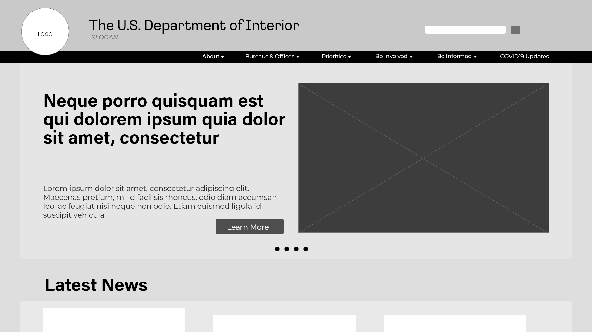
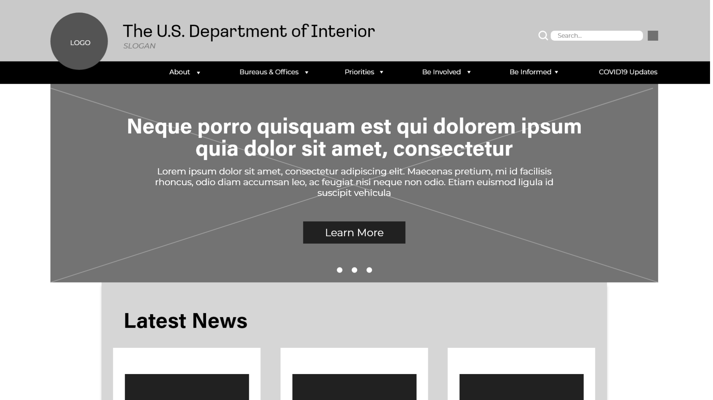
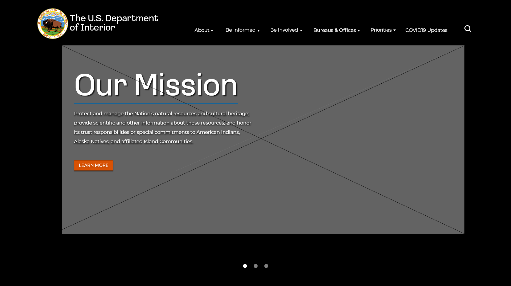

Department of the Interior Website Redesign
The Department of the Interior plays a central role in how the United States stewards its public lands, increases environmental protections, pursues environmental justice, and honors our nation-to-nation relationship with Tribes.
Project Overview
Why we chose the department of the interior
Me and my groupmates were given the task to redesign a government agency website and we chose The Department of the Interior because we were able to find a few navigation and accessibility issues which we are confident that we can improve. Although the website's current layout is not terrible, we were able to brainstorm on different ways that we can revamp it.
My Role
Me and my groupmates were given the task to redesign a non-profit organization's website and we chose homelesshouston.org because we were able to find a few navigation and accessibility issues which we are confident that we can improve. With our whole team being in Houston, we heavily connect with The Coalition for the Homeless' core values.
Project Timeline
Total time spent: 3 weeks
Problem Statement and the Solution
The Problem
Users have trouble navigating and locating information from the website because the information structure of the website is confusing and ambiguous.
The Solution
By organizing the information in a clean and cohesive format, users will have an easier time navigating and searching for more information about the Department of the Interior's core values, resources, etc.
User Research
Current Website Layout

User Testing
Before we performed heuristic evaluation, we let 5 users test the website's usability. They were given a randomized set of tasks that involves locating information and button navigation.
Heuristic Evaluation
After we performed a heuristic evaluation, our team has agreed that the site contained too much text, the images felt stock, and overall boring.
What our users said:
“...the website was easier to navigate compared to other government websites and it wasn’t an eye sore. It took me a minute to click on the right link but easy to find.”
“...the volunteer page was a little confusing. I had to scroll all the way down to locate the ‘Volunteer Pass’ when I clicked on Volunteer opportunities.”
“The pictures felt weird, I feel like I am looking at a gallery of stock Nat Geo images”
User Persona
Robin Ojweda
Age: 33
Gender: Female
Occupation: Interior Designer
Location: Houston, TX
Behavioral Demographics
• Cares about affordable living and giving to the community
• Wants everyone to be part of the solution in battling homelessness
• Believes that a huge goal is achievable through teamwork
• Uses social media as her way of communicating to the world
Goals
To volunteer in programs that provides shelter for the homeless
For non-profit organizations to be transparent about their donations
Frustrations
Feels frustrated when the donations are not going where it's intended
Feels defeated when she cannot find what she is looking for in a website
Empathy Map
Say
I wish people would care more about the land preservation issues.
I like researching directly on the government's website since it's accurate information, however, most of the time, it's outdated.
Do
Only click what they want to see
Immediately leaves website if they can't find what they're looking for
Feel
The media feels really outdated and it makes me feel boring when searching the website.
The colors makes me feel warm and I love the contrast it provides. The navigation is confusing and it makes it seem like everything is out of place.Think
"It’s great that we have a body of government that focuses on Native land preservation."
"The government needs to heavily consider the design of their websites"
Pain
Frustrated when I dont know where donations go
The whole website feels like a textbook and cannot find what I am looking for.
Gain
Updating the website by adding a few updated graphic elements will improve it.
"I wish the organizations are actually utilizing social media for an expanded outreach."
Wireframes and Usability Testing
Version 1
Our team has decided to base our initial design from the original layout and play with different elements. We like the big hero space aspect of the original layout so we decided to keep that and tweak it a little bit.
Based on our research, we found out that users did not really know who Department of the Interior is. Hence, we designed our hero space to contain a carousel that will allow users to browse through the organization's core values.
Version 2
We decided to test our initial wireframe and we have received feedback that it looked too similar with the current layout. So we have designed the hero space to include a bigger image and for the hero text to be aligned in the center which we feel would draw attention to the user.
Version 3
Further iteration was required and a usability testing was performed with 7 users. We were inspired by the NASA website design and we decided to incorporate those elements in our redesign.We decided to opt to a hero space with a statement image that takes up majority of the space,huge text, and make the call-to-action button pop by using a bright color that is not too distracting.
All 7 users tested both desktop and mobile wireframes and each user was given the goals of exploring the navigation menu, and navigating to specific articles.
Final Design

Key Findings and Summary
Based on our research, we have found that majority of government websites need to be reworked in terms of both UX and UI. We all agreed that the Department of Interior needs to be revamped and we found out how important it is for organizations to adapt to technology and design as it grows.
Let's Work Together
I am currently open to satisfy your graphic design needs and be a part of your design team! I am on my phone as long as I am awake, so expect a response possibly within seconds.
You can also view or follow my accounts below. I'm always looking for new friends and connections so please do not be shy to say hi!